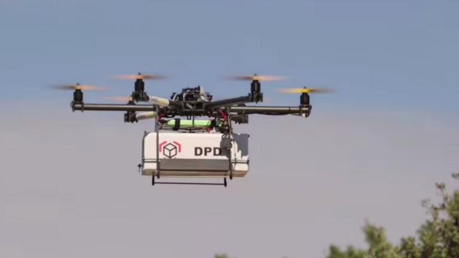

Où en sommes-nous concernant les drones de transport aujourd’hui
Tout d’abord, reprécisons ce qu’est un drone et son apparition dans l’histoire, afin de bien comprendre ce sur quoi se porte notre réflexion, et les limites de notre analyse.
Un peu d’histoire…
Un drone désigne un aéronef (moyen de transport capable de s'élever et de se mouvoir en altitude, au sein de l'atmosphère terrestre) sans-pilote humain à bord, la conceptualisation du drone remonte à la fin de la Première Guerre Mondiale. Alors qu’aux Etats-Unis se développe le projet « Hewitt-Sperry Automatic Airplane », en France George Clémenceau, alors Président de la Commission sénatoriale de l’Armée, lance un projet « d’avion sans pilote » : le capitaine Max Boucher met au point un système de pilotage automatique qui fait voler sur plus de cent kilomètres un avion. Ainsi, dans les années 1920, des avions sans pilote radiocommandés par des ondes de télégraphie sans fil voient le jour.
De nos jours
De nos jours, les drones sont le plus souvent composés d’un châssis, de minimum 4 moteurs brushless qui fonctionnent avec des bobines de cuivre, et de plusieurs contrôleurs qui permettent de gérer la vitesse, altitude, distance ainsi que les moteurs. Les drones pour la vidéo, de loisirs ou encore militaires se répandent. Mais étonnamment ceux de transport se développent et se perfectionnent aussi de plus en plus : autonomes, simples à piloter et très peu polluants. Aujourd’hui, plusieurs constructeurs sont déjà sur le coup. Nous sommes allés soulever leurs capots.
Différentes technologies de drones envisagées pour transporter des personnes
C’est le constructeur européen Airbus qui a le plus de projets dans ses cartons, son objectif est de développer un taxi volant électrique en milieu urbain. D’abord, nous pouvons faire référence à Vahana, qui a huit hélices pour un seul passager et dont la mise en service est programmée dans un futur extrêmement proche soit en 2020 : cependant, les prototypes n’ont pas été présentés au grand public en utilisation réelle. Son premier vol d'essai grandeur nature a été effectué le 31 janvier 2018. La technologie envisagée ici concerne un aéronef qui procèderait à un décollage et à un atterrissage de manière verticale (VTOL : « vertical take-off and landing » en anglais), ce qui s’inscrirait parfaitement dans une cible réaliste pour nos villes de demain : pour des trajets interurbains.
Autre cas d’étude intéressant, le PopUp Next a été développé en collaboration avec Audi et ItalDesign : il a une vitesse de pointe de 540km/h avec
un temps d’utilisation de 5 minutes pour 15min de charge de la batterie. Sa sortie est prévue en 2027. Il a été présenté pour la première fois au salon de l'automobile de
Genève en 2018. Son intérêt réside notamment dans le fait qu’il pourrait transporter plus d’un passager. Il combine l’intérêt d’un véhicule terrestre une fois au
sol.
Par ailleurs, le CityAirbus a pour ambition de devenir le bus aérien de demain, avec une capacité supérieure. Véhicule électrique à décollage et atterrissage verticaux
toujours, il pourra embarquer jusqu’à quatre personnes à 100 km/h dans le ciel des villes. Plus lourd et plus grand que Vahana, il nécessitera dans un premier temps un
pilote humain avant d’opérer définitivement sa mue de drone autonome.
 Sur ce schéma en anglais, on se rend compte que le cycle de développement de ces technologies est particulièrement rapide : sur la base d’une
étude de faisabilité en 2015, les industriels sont en mesure de présenter un projet très abouti en à peine 3 ans. La cible de certification finale serait en 2023. Comparé aux autres technologies
de transport, le drone de transport semble bénéficier d’un rythme très rapide de recherche et développement.
Sur ce schéma en anglais, on se rend compte que le cycle de développement de ces technologies est particulièrement rapide : sur la base d’une
étude de faisabilité en 2015, les industriels sont en mesure de présenter un projet très abouti en à peine 3 ans. La cible de certification finale serait en 2023. Comparé aux autres technologies
de transport, le drone de transport semble bénéficier d’un rythme très rapide de recherche et développement.Avec moins de moyens, les startups sont cependant dans la course. En Allemagne, le drone Lilium Jet pourra voler à 300 km/h grâce aux 36 moteurs
électriques disposés sous ses ailes. Construit en fibres de carbone, sa mise en circulation est prévue pour 2025.
Du côté des États-Unis, le drone S2 Aircraft, développé par la firme Joby sous contrat avec la NASA, sera biplace et cent fois plus silencieux qu’un hélicoptère d’après
son concepteur.
Mais nous avons aussi le projet Echang184, qui est à l’heure actuelle sûrement le plus prometteur de tous. Son prototype a déjà été dévoilé au CES (Consumer Electronics Show)
de Las Vegas en 2016 et aussi testé en condition réelle. 30 personnes l’ont déjà acheté et 300 personnes l’ont commandé pour un montant allant de 200 000 à 300 000 $ le drone.
Avec une charge maximale de 100kg, il va à une vitesse de 100km/h (60km/h pour sa vitesse de croisière) tout en pouvant rester entre 300 et 500 mètres d'altitude.
De plus, sa batterie de 17kw-h, durant 25min maximum se recharge complètement en seulement 1 heure. Sa sortie est d’ailleurs prévue en 2022.
Des drones de marchandises déjà bien avancés
Certaine entreprise comme Amazon ou encore plus étonnamment La Poste qui se concentrent eux sur des drones pouvant transporter des colis de marchandises. Le drone d’Amazon
nommé “Amazon Prime Air”, est un drone de 25kg filant à une vitesse de 90km/h et pouvant soulever jusqu’à 2,7kg. Sa batterie serait d’elle, d’une autonomie allant de 30min.
Sa sortie est justement en cours d’autorisation, et elle est donc demandée auprès du ministère.
Le drone de La Poste nommé “GéoDrone” est lui tout aussi intéressant avec un poids de charge allant jusqu’à 3kg et un temps d’utilisation de 40min sois 20km à 30km/h.
Il est lui aussi fini et essaye désormais de se faire accepter par la règlementation.
A l’heure actuelle, des entreprises comme Google, Amazone, UPS, LaPoste envisagent d’industrialiser leurs transports d’objets via des drones livreurs : par une programmation
puis une totale automatisation de leur chaine logistique.
Dans le cadre médical, le transport de médicaments ou de denrées de premières nécessités est vu aujourd’hui comme une cible intéressante pour mettre en œuvre des moyens comme
les drones afin de répondre à une urgence (cas de catastrophe naturelle, par exemple)
Sur ce créneau, c’est Boeing qui semble avoir senti un marché. Là où les concurrents ciblent du transport de petit colis, Boeing est déjà très avancé sur le créneau des
« drone-cargo » avec du fret qui dépasserait 200 kg.
Ce type de drone pourrait alors se positionner sur un marché qui couvrirait plus que les simples aires urbaines.
Sur ce créneau de transport de gros colis, les grandes entreprises chinoises comme JD.com ne sont pas en reste. Avec 65000 employés et 235 millions de clients, ce grand
concurrent d’Alibaba est très avancé : il a investi dans un centre de recherche à la pointe de la technologie pour revoir son processus logistique avec une flotte de drones
au cœur de sa stratégie.